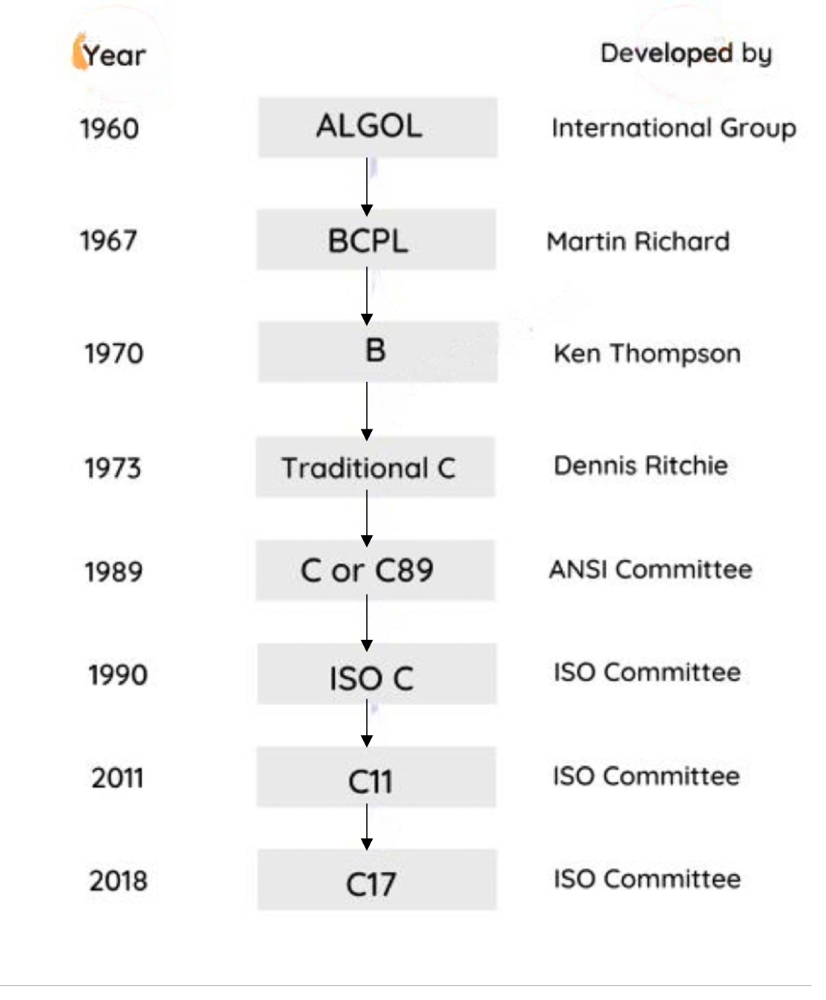

home
History of C

Algol(1960) :
- ALGOL is a High-Level language invented by the International Group in 1960.
- It was the 1st language to follow the Structure Programming Concept.
- This language become more famous in Europe but not that much in the US.
BCPL (1967):
- Taking forward the concept of ALGOL, Martin Richards has invented BCPL (Basic Combined Programming Language) in 1967.
- Both languages were simply used for Academic purposes.
B (1970):
- Ken Thompson in the year 1970 had invented the language call B.
- It was also called as Simple B language. He had developed this language by taking forward the concepts of BCPL.
- This was also mainly used for Academic purposes
Traditional C (1972):
- The first version of C was developed by Dennis Ritchie at Bell Labs and was used to rewrite the Unix operating system and its utilities.
C or C89 (1989):
- The ISO standard for C was often referred to as "C89".
ANSI/ISO C (1990):
- In 1990, the ISO C standard was updated to include new features, such as improved type checking, function prototypes, and improved memory management.
- This updated version of the standard is often referred to as "ANSI/ISO C."
C11 (2011):
- In 2011, the ISO C standard was updated again, adding new features such as multi-threading support and atomic operations.
- This version of the standard is often referred to as "C11."
C17 (2018):
- The ISO C standard was updated again in 2018, adding new features such as improved support for multithreading and improved memory safety.
- This version of the standard is often referred to as "C17."